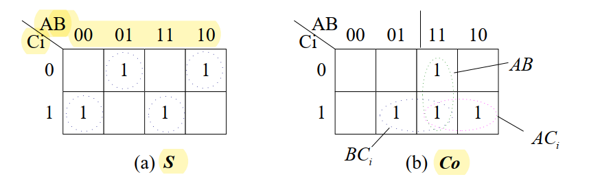
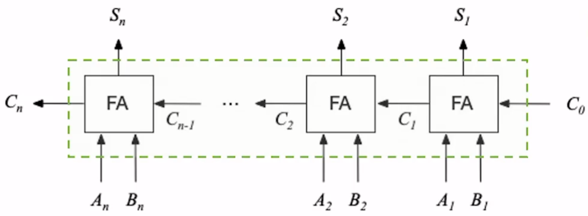
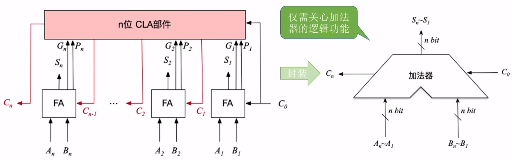
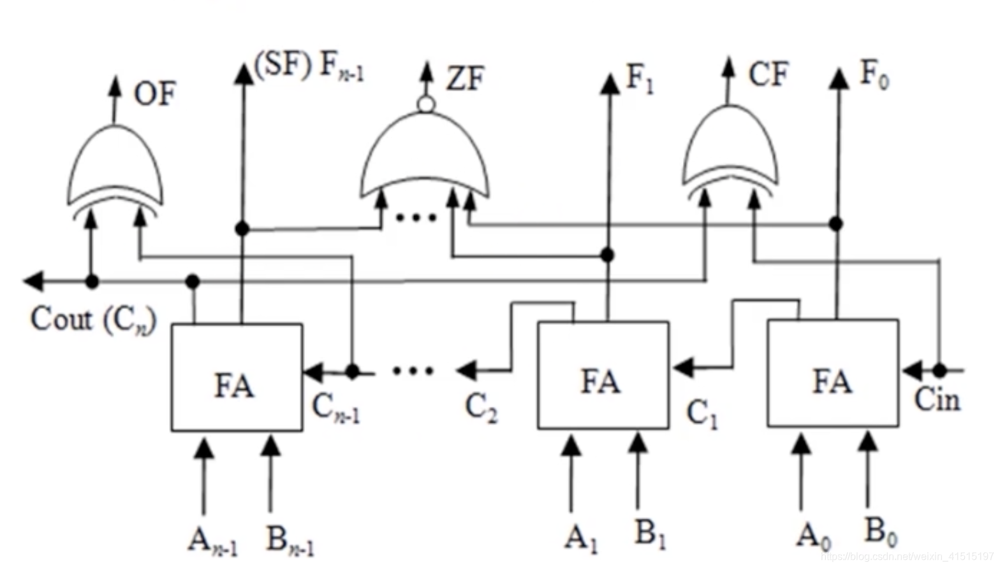

# Ch2 数据的表示和运算
# 2.1 进位计数制及其相互转换
# 2.1.1
- 十进制二进制八进制十六进制转换
- 略
# 2.1.2 定点数的编码表示
- 定点百世一般表示定点小数和定点整数，小数是符号位.xxx，整数是符号位 xxxx.0
-
感觉不是什么重要的东西，浮点数表示比较重要
- 原码，反码，补码
- 正数的原码反码补码相同
- 原码表示的范围为
- 补码表示的范围为
- 负数的原码是 1 + 绝对值，反码是 1 + 绝对值取反，补码是反码 + 1
- 移码：用来表示浮点数的阶码，只能表示整数
- 一般用移码表示浮点数的阶码，用补码表示定点整数
移码就是在真值 x 前面加一个 offset，比如取 offset 为 2^7，就在补码的第 8 位加上 1
- 比如正数 10101，移码是 10010101，负数 - 10101 的补码是 11101011，所以移码是 01101011
- 移码的作用是保持数据原有的大小顺序，移码大真值大，移码小真值小，所以可以直观地进行比较
相同位数的补码和移码表示具有相同的数据表示范围，区别只是表示方法不同
补码与移码只差一个符号位。同一个数的补码和移码表示，其数值部分相同，而符号位相反。
# 2.1.3 整数表示
略
# 2.1.4
c 中的强制转换
short 转成 unsigned short 直接把二进制看成 unsigned short，比如 - 1 变成 65535
int 变成 short 直接截断
小字长转大字长不会改变值，如果是 unsigned 就会在前面补 0，如果是有符号数就在前面补符号位
short 转 unsigned int，先对 short 进行符号扩展到 int，再把它当做 unsigned int，如果是 unsigned short 转 int，就进行零扩展再看成 int……
一些题目
example
若, 其中 取 0 或 1，若要 x>-32，应当满足：
C. 为 1， 中至少有一位为 1
1100000 是 - 32，要比 - 32 大所以绝对值要小，所以数值部分要大，所以 必须是 1, 后面随便有个 1 就行
设 x 为正数，, 若要 x<-16，应当满足：
C. 必须为 0，其它任意
110000 是 - 16，要小于 - 16 所以数值部分绝对值要小，所以只要 为 0 就比 - 16 小
一个 8 位的二进制整数由 2 个 “0” 和 6 个 “1” 组成，采用补码或者移码表示，则
若采用移码表示，偏置值为 127，则此整数最小为 - 64（偏置为 127 需要在补码加上 1111111，要让数值最小，应该把 1 放低位，所以移码是 00111111，补码是 10111111 是 - 64）
：前面说过，移码大真值大，移码小真值小，所以要让数值最小把 1 放低位就行了
若采用补码表示，则此整数最小为 - 97（10011111=-97）
对于无符号数，数值大的数就大
对于有符号数的原码和反码比较大小：先看正负然后看数值，反码数值转成原码再比
对于补码比较大小，正数正常比较，负数数值部分越小，绝对值越大（前面 1 更多的数的绝对值越小，所以 11111111 是 - 1）
# 2.2 运算方法和运算电路
# 2.2.1 基本运算部件
# 一位全加器
- 用真值表实现的：进位 C，和 S
| A | B | Cin | Cout | S |
|---|---|---|---|---|
| 0 | 0 | 0 | 0 | 0 |
| 0 | 0 | 1 | 0 | 1 |
| 0 | 1 | 0 | 0 | 1 |
| 0 | 1 | 1 | 1 | 0 |
| 1 | 0 | 0 | 0 | 1 |
| 1 | 0 | 1 | 1 | 0 |
| 1 | 1 | 0 | 1 | 0 |
| 1 | 1 | 1 | 1 | 1 |
- 可以用卡诺图或者直接理解 (王道不写还好我本来就会，差点忘了。。。)

# 串行进位加法器
- 把 n 个一位全加器连起来

Carry Propagation & Delay
# 并行进位加法器
对 Cin 进行 look ahead

前面提到：
下一位的 Cin 等于上一位的 Cout，所以可以进行 look ahead，这里让
所以
就能得到超前进位的效果
# 带标志加法器

- 溢出标志 ，只能判断有符号数是否溢出
- 两个正数加起来变成负数或者两个负数加起来变成正数，就会溢出
| A | B | C_ | F | OF | |
|---|---|---|---|---|---|
| 0 | 0 | 0 | 0 | 0 | 0 |
| 0 | 0 | 1 | 1 | 0 | 1 |
| 0 | 1 | 0 | 1 | 0 | 0 |
| 0 | 1 | 1 | 0 | 1 | 0 |
| 1 | 0 | 0 | 1 | 0 | 0 |
| 1 | 0 | 1 | 0 | 1 | 0 |
| 1 | 1 | 0 | 0 | 1 | 1 |
| 1 | 1 | 1 | 1 | 0 | 0 |
第二行 A=0, B=0, F=1，正 + 正 = 负
第七行 A=0, B=1, F=0，负 + 负 = 正
所以 OF=1，表示有溢出
观察发现
- 符号标志 ，输出的最高位决定有符号数的正负
- 进位 / 借位标志：用于判断无符号数的加减运算是否溢出
- 此处的 Cin 和 Cout 表示最开始的输入和最后的输出，还没理解
- 零标志 当且仅当所有 F=0 时为 1，否则为 0（把所有 F 作或非）
# ALU
略
# 2.2.2 定点数的移位运算
- 左移一位 * 2，右移一位 / 2
- 逻辑移位：移完直接补 0
- 无符号数若高位的 1 移出，则发生溢出
- 算数移位：有符号数右移时，补符号位，左移如果高位和符号位不同，则发生溢出
# 定点数的加减运算
补码相加减，略
主要是溢出判断：符号相同的数相加或者符号相异的数相减会发生溢出
- 一位符号位（参考前面 OF）
- 双符号位（模 4 补码）
- 符号位左边那一位表示正确的符号，0 为正，1 为负；右边那一位如果和左边的相同，如 "00” 表示正且无溢出，"11" 表示负且无溢出。如果右边那一位与左边那一位不一样，则表示有溢出
- 溢出逻辑判断：若 V 为 0 则无溢出，V 为 1 则溢出
例子看这篇写的挺清楚：https://blog.csdn.net/sun_boy_boy_sun/article/details/87917020
总之两位不同则有溢出
# 定点数的乘除运算
略，列竖式即可